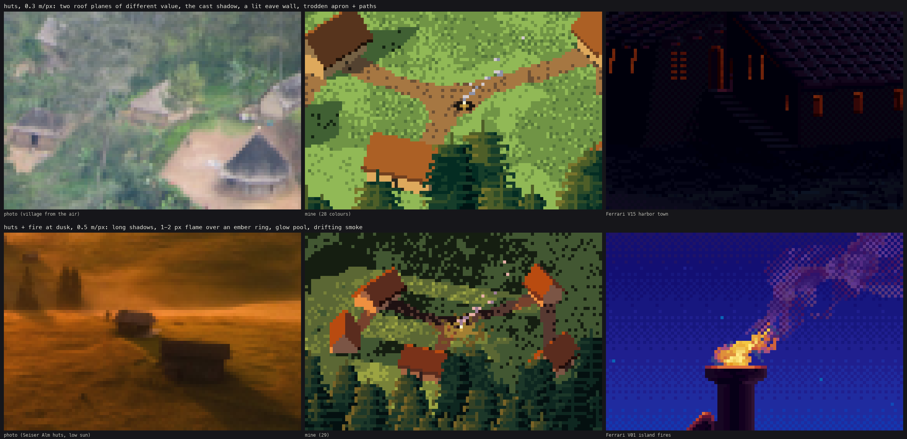
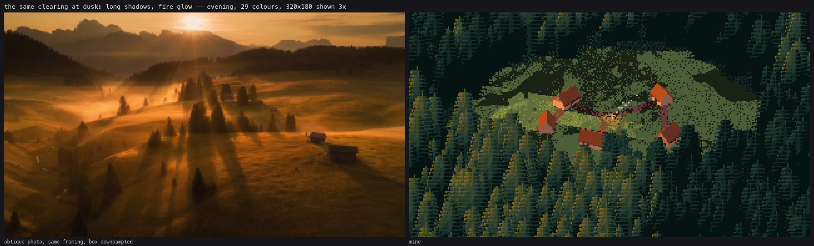

How-to 6: Small things: huts and fire
Back to the field guide. Code: ~/work/pixelart-studies/aerial/lib/tech_objects.py, subjects.village. Study: studies/huts_fire.png.

The village at 0.35 m/px, beside a village photographed from the air.
1. What reads, in order
From the photos (a village from the air, the Seiser Alm huts at low sun, beach huts from above), a hut seen 30–45° down is read by four things, in this order:
- the roof as two planes of very different value, one lit and one in shade, 30–50 L* apart;
- its cast shadow, which is what stands it up, and is longer than the hut is tall at low sun;
- one light wall edge under the eave on the sun side (the rest of the wall is under the roof);
- a trodden-earth apron and paths, bare soil lighter than the meadow.
Ferrari (V15, the harbour town) does buildings as planes of flat colour with a 1-px light ridge or edge line and black openings.
2. Build it from planes into the index canvas
Don't draw a hut sprite. Splat points from each 3D face into the index canvas, so each face carries its own step (and re-lights with the palette). A pixel z-buffer handles the overlaps, and the terrain's depth hides anything behind a ridge.
def face_step(nrm, sun, sunlit):
"""roof/wall ramp of 4: 0 dark opening/eave | 1 shade plane || 2 half | 3 lit plane."""
d = float(np.dot(nrm, sun))
if not sunlit or d <= 0.05:
return 1
return 3 if d > 0.45 else 2
Build order: the shadow first, then the four walls, a black door on the camera-facing wall, the two gables, and the two roof planes (with a 0.45 m overhang). The marks are an eave line one step down along each roof's lower edge and a 1-px ridge highlight on the lit plane:
steps = np.where(b < 1.0 / n * 1.5, np.maximum(st - 1, 0), steps) # eave line
if st >= 2:
steps = np.where(b > 1 - 1.5 / n, 3, steps) # ridge highlight
_splat(cv, P, "roof", steps, cam, G, band=band, bias=0.12) # roofs win ties with walls
The shadow is the convex hull of the hut's corners and ridge ends projected along the sun onto the ground. It moves the ground under it into the ground's own shadow family, keeping its texture (Canvas.to_shadow, the same as tree shadows in how-to 2):
hull = ConvexHull(np.c_[sx, sy]); poly = Path(np.c_[sx, sy][hull.vertices])
inside = poly.contains_points(np.c_[XX.ravel() + 0.5, YY.ravel() + 0.5]).reshape(YY.shape)
cv.to_shadow(full & (cv.tag != 5))
Paths join the huts and the fire along a minimum spanning chain, 1.4 m wide, with a bare apron of about 5.5 m around each hut. The soil's cover weight has to beat the meadow, or the aprons break up.
3. Fire
A fire from above is small. By day, what you see is more its smoke than its flame.
- Flame: 1–2 px of the fire ramp's hottest steps, over an ember ring. At coarse scales only the centre and the pixel above are kept.
- Smoke: sparse light pixels drifting downwind and upward (on screen, up is the camera's up), thinning with height, some doubled sideways.
- At dusk: a dithered glow pool on the ground, 6 m in radius, whose density falls outward, using the fire ramp's two low steps.

The study: huts at 0.3 m/px and huts with a fire at dusk at 0.5 m/px, beside the photos and Ferrari's V15 and V01.

The same clearing at dusk: long shadows and the fire's glow.
Where it breaks
- Every hut is the same gabled box, and the roof colour never varies.
- The smoke plume is noise-like at 0.35 m/px. Ferrari's V01 smoke is a coherent dithered column, and mine isn't.
- The fire's glow only exists in the "evening" light. There's no night.